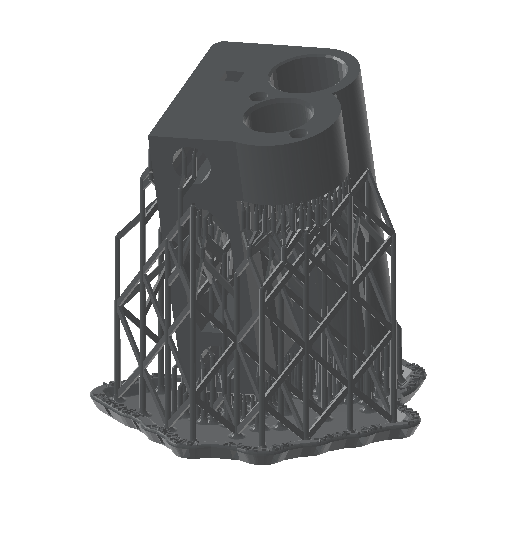
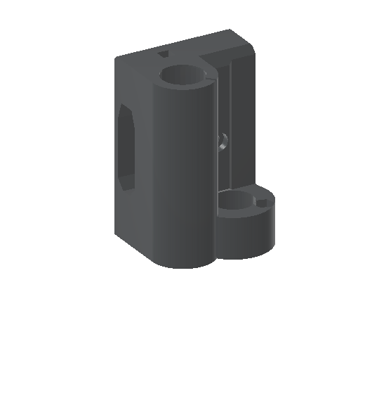
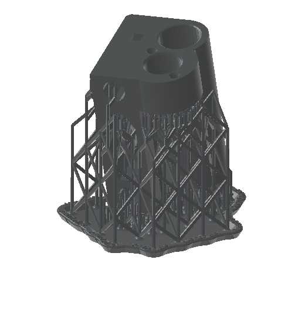

A downloaded STL to a print-ready Form 4 job. One sentence.
Open PreForm, import, orient, supports, check for cups, drain holes, estimate, upload. You have done it a thousand times. This page is a real run where Claude did all of it from one prompt in about two minutes, and the part on the right is the actual result. Drag it to look around.

drag to spinThe run
An X-axis idler bracket from the Original Prusa i3 MK3S: two bearing bores, a belt slot, a few M3 holes. Downloaded the way any part is, dropped under the home folder, and handed to Claude Code. Every line below is a real tool call and what came back.
Prep ~/formlabs-demo/x-end-idler.stl for the Form 4 in Tough 2000 at 0.1 mm and save the job next to it.
health_checkPreFormServer 3.62.1 started on demand and answered.list_materialsLooked up the Form 4 list and pickedFLTO2002(Tough 2000 V2) at 0.1 mm, Supports V2. No guessed codes.create_sceneEmpty Form 4 scene, 200 × 125 × 210 mm build volume.import_modelLoaded the STL with mesh repair on; 37 × 40 × 58 mm, in bounds.auto_orientFlipped the part over and tilted it about 11°, the orientation PreForm judges best for printing.auto_supportSupports and raft with PreForm's default density and touchpoint size.auto_layoutCentred on the platform.get_print_validationcups 0 · unsupported minima 0 · undersupported no · seam line noestimate_print_time6975 s, so 1 h 56 min.get_scene45.6 ml resin, of which 35.0 ml is the part itself.save_formWrotex-end-idler.form(1.0 MB) next to the STL.save_screenshotRendered the images on this page.
Done. Form 4, Tough 2000 V2, 0.1 mm layers (Supports V2 settings).
- Auto-oriented and supported; 717 layers.
- Validation: no cups, no unsupported minima, not undersupported, no seam line.
- Print time about 1 h 56 min. Resin 45.6 ml total, 35.0 ml of that in the part.
- Saved
~/formlabs-demo/x-end-idler.formand a previewx-end-idler.png.
Open the .form in PreForm to inspect it, or tell me which printer to send it to.
What PreForm did to it
Same camera, same part. Left is the STL as downloaded, right is what Claude saved. Drag the divider.


as downloadedprint-readyWhy it tilted the part
As downloaded, the part stands on its flat base with both bearing bores pointing straight up. PreForm's auto-orient flipped it and leaned it about 11°, the orientation its algorithm scores best for overhangs, support count and surface finish, then built the raft and lattice you see. Claude did not decide any of that; it asked PreForm to, then checked the answer with get_print_validation and reported zero cups and zero unsupported minima.
What you get back
A normal .form file. Open it in PreForm, move a support, change your mind about the raft. Nothing is locked away in a chat window.
Same part, other choices
Claude re-ran the pipeline in seven materials, at two layer heights, as a six-up batch, and on a Fuse 1+. Pick one; every number is PreForm's own estimate from those runs.
| Run | Time | Material |
|---|
Then: send it
Printing is the one step that cannot be undone, so the /formlabs:print skill always stops for an explicit yes. On a network with a Form 4, the exchange looks like this:
Send it to the Form 4 on the bench.
Found one printer: Form4-XXXXXX, idle, tank has Tough 2000 V2 loaded, matches the job.
Job x-end-idler: Form 4, Tough 2000 V2, 0.1 mm, 1 h 56 min, 45.6 ml, validation clean.
Send it?
Yes.
Uploaded. The job is queued on Form4-XXXXXX; the printer will show it under Print Queue. It is not started automatically unless you ask.
print_to_printer) with the serial blanked. Claude warns you if the tank material does not match the job.People have been asking for this since 2015
Threads from the Formlabs community forum, quoted verbatim with links. None of these people were writing about this project; they describe the gap it was built to close. The orange line under each is the tool that covers it today.
July 2026
"Manually arranging parts to find an optimal packing can be very time consuming and it’s impossible once the number of models or quantities exceed 2."
January 2026
"We’re developing software to support a facility that uses FormLabs printers (specifically the Form4 series) doing production manufacturing … We’re trying to reduce the amount of interaction a technician needs to have with the touchscreens."
November 2025
"I’m imagining a scenario where I load in 100+ parts queued for production, and it automatically organizes them into the most efficient set of build chambers to hit the highest packing density and minimize total print runs."
April 2026
"Did you end up releasing the GitHub? I’m working on automated cost calculation tools this would be great!"
March 2018
"I have my own private cloud platform where I can handle my FDM printers (get status, send prints…), and I want to integrate formlabs printers on that same platform … if PreForm could be used on the command line, without using the GUI … It is not possible now."
December 2023
"I am using the command line to interact with preform. When I use the --material flag or the --resolution flag nothing happens. Anyone using this successfully?" No replies before the thread auto-closed.
September 2017
"So it took me about 10 minutes to get all 32 item positioned on the build plate."
February 2015
"being albe to print from commandline would allow scheduling the print as well." [sic]
Get it
Needs Node.js 20+ and Claude Code. The script adds the plugin and downloads PreFormServer (Formlabs' headless PreForm) from Formlabs, checking Formlabs' code signature before installing it into a folder you own. No sudo, nothing global. Read it first if you like; it is short.
curl -fsSL https://mkebiclioglu.github.io/formlabs-claude-skills/install.sh | shThen open Claude Code, run /formlabs:setup, and say something like "Prep ~/parts/bracket.stl for the Form 4 in Tough 2000 and save it." Not on Claude Code? The MCP server runs on its own in Claude Desktop, Cursor and any MCP client: npx -y formlabs-local-mcp@1.0.6. Details.
Where it starts to pay off
Batches
"Pack all twelve STLs in ~/parts/rev-c onto the Fuse 1+ in Nylon 12 and tell me the total powder use." One prompt, one packed chamber, one estimate.
Material what-ifs
"Same part in Grey at 0.05 mm, how long?" A second scene and a second estimate in seconds. The explorer above is exactly that, nine times.
Hollowing and drain holes
"Hollow it to 2 mm walls, add drain holes, re-validate." Cups get flagged and holes placed without a mouse.
Reprints
"Open ~/jobs/housing.form, swap the model for housing-v4.stl, keep the orientation, re-estimate."
Your fleet
"Which printers are online and what is loaded in each tank?" Then send the job to the one with the right resin.
Scripts, not clicks
The same tools drive from any MCP client or your own automation. A nightly job that preps every new file in a folder is a prompt away.
What it will not do
- Send a job without your yes.
print_to_printeris gated in the skill and flagged as destructive to the client. - Touch files outside the folders you allow (your home directory by default), or hidden folders like
~/.ssh, whatever a prompt says. - Install PreFormServer from anywhere but
downloads.formlabs.com, or without a valid Formlabs code signature. - See your Formlabs password.
loginreads it from the environment and never returns tokens to the model.
Everything else, from configuration and other MCP clients to Linux and remote mode, is in the docs. More on safety in the security section and in SECURITY.md. Tried it? Tell us what you printed in Show and tell. Both repos are MIT and take pull requests.